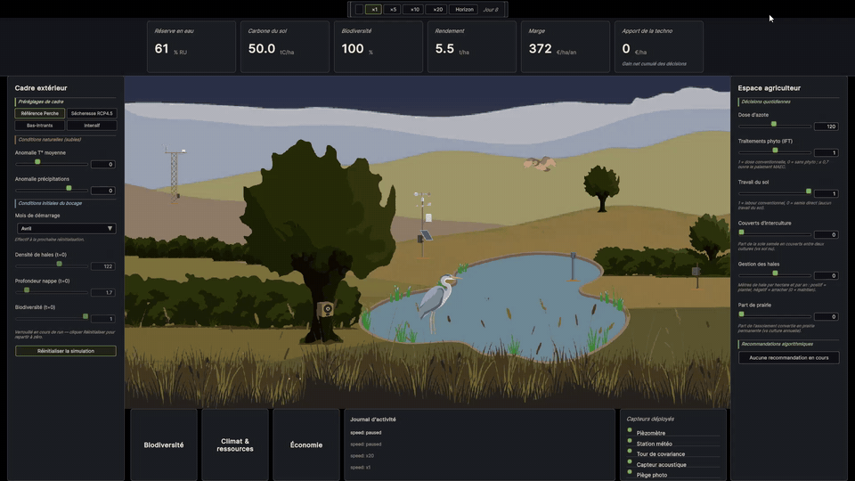
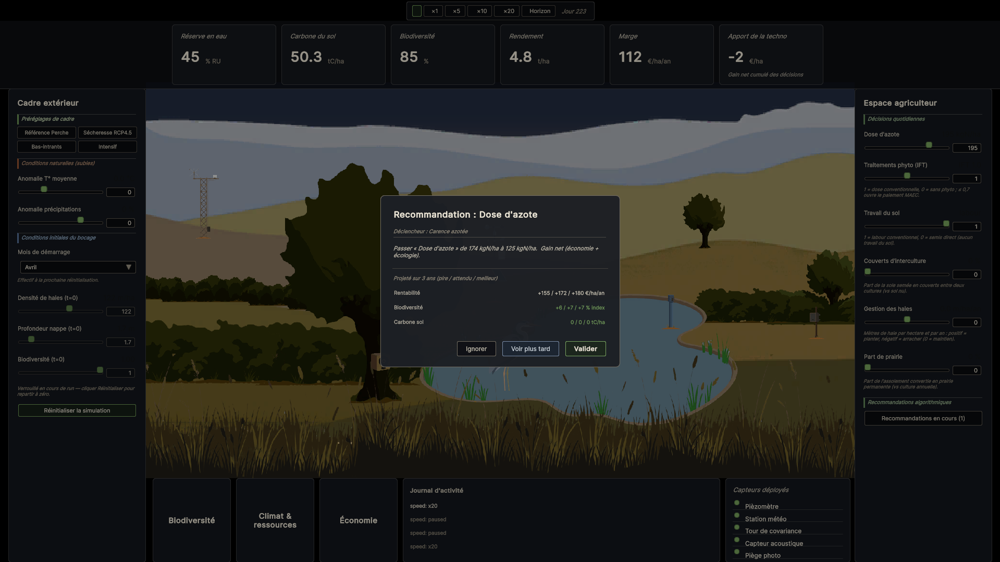

Simulation / environment
Bocage Digital Twin
An instrumented digital twin of a Norman bocage, built to test a conviction: ecology and economy can be optimized together, rather than systematically opposed.

Context
Ecology and economy are constantly framed as opposites. My conviction: you can optimize a system by reconciling both, rather than systematically opposing them. My hypothesis: access to data makes this reconciliation possible. Rather than asserting it, I built a model that tests it. The simulation never presupposes the answer: mismanage, and both ecology and economy suffer.
Approach
Real-time simulation of a fictional but plausible Percheron bocage site. You control 6 levers (nitrogen, pesticides, tillage, cover crops, hedgerows, grassland share) against 2 climate presets, and watch the consequences cascade across water, carbon, nitrogen, yield, biodiversity and margin.
Two simulations run in parallel on the same seeds: the real run follows your decisions, a "shadow" run keeps initial decisions frozen. Their gap, in euros, measures the contribution of instrumentation, measured, never assumed.
Guiding principle: sensor primacy. Birds and heron only appear when the measured biodiversity index justifies it. That's where the recommendation engine steps in, derived from the model and not scripted. It identifies win-win moves without ever deciding for the user.

Results
- Deterministic model: same seed and same inputs ⇒ same run.
- Orders of magnitude sourced from INRAE, Solagro, Arvalis/COMIFER, Efese, PNR du Perche, Météo-France.
- An honest indicator: the instrumentation contribution measures the marginal precision gain.
- The recommendation engine is derived from the model, with no hard-coded rules.
Demo & code
The twin runs directly in the browser (WebGL). The software architecture is split into 5 strict layers (Simulation Core / Sensors / Decision / Indicators / Presentation); the simulation core is pure C#, without Unity dependency, tested headless.